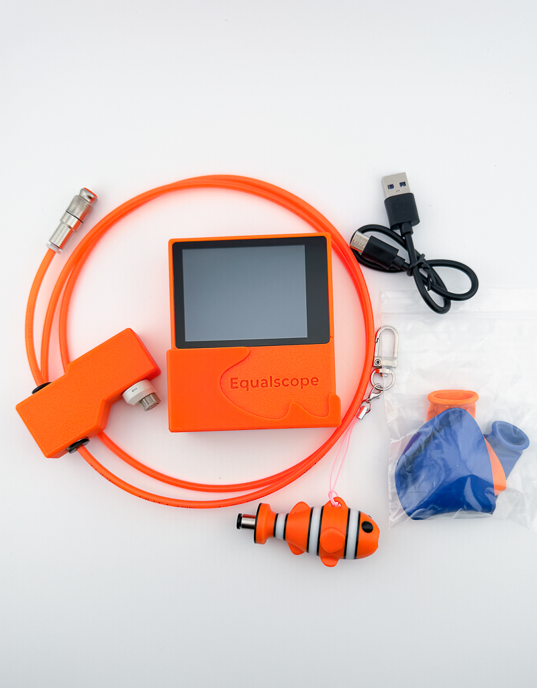
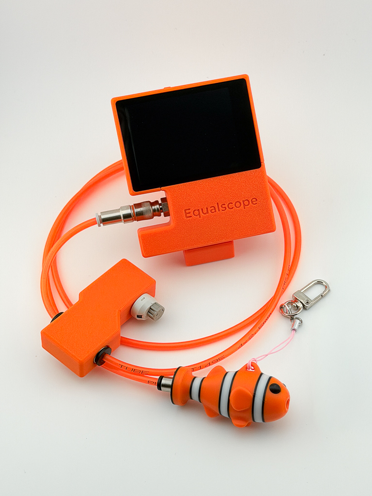

Equalscope
QUICK START
② 전원 켜기 · 영점 보정
전원 버튼 3초 → 부팅 후 약 5초 영점 보정. 이때 이퀄벤트를 코에 대거나 압력을 가하지 마세요. 기준점이 정확도를 좌우합니다.
③ 측정하기

[시작] → 이퀄벤트를 코에 대고 이퀄라이징. 실시간 그래프 표시. 핀치=줌, 스와이프=좌우. 마치면 [정지].
전원 · 측정3 / 5


전원 버튼 3초 → 부팅 후 약 5초 영점 보정. 이때 이퀄벤트를 코에 대거나 압력을 가하지 마세요. 기준점이 정확도를 좌우합니다.

| 시작 | 측정 → 정지 → 분석 |
| 파일 / 리셋 | 저장 보기 / 그래프 초기화 |
| 설정 / 전원 | 테마·밝기·알람 / 끄기(또는 버튼 3초) |
| 핀치 · 스와이프 | 그래프 줌 · 좌우 스크롤 |
| 3손가락 탭 | 화면 캡처(SD 필요) |
| 펌웨어 | SD에 .bin 넣고 켜면 자동 업데이트 |